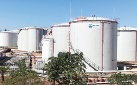

“
Chất lượng khởi nguồn từ đam mê
„
Câu chuyện khởi nguồn từ đồi chè mênh mông xanh ngút tầm mắt. Hành trình khởi nghiệp của người sáng lập thương hiệu Phúc Long bắt đầu. Đó là chuỗi tháng ngày vất vả trên cánh đồng bạt ngàn: chắt chiu từng búp trà non, hạt cà phê chế biến thủ công từng mẻ trên bếp than hồng, rồi rong ruổi khắp phố phường bán từng quán nhỏ. Chuỗi ngày ấy nuôi dưỡng ngọn lửa đam mê học hỏi sáng tạo trong ông, để vào năm 1968, cửa hàng sản phẩm Phúc Long đầu tiên ra đời.
Tại cao nguyên chè danh tiếng Bảo Lộc (Lâm Đồng), Phúc Long được ra đời với kỳ vọng mang đến những sản phẩm trà và cà phê chất lượng.
Phúc Long khai trương ba cửa hàng đầu tiên tại Thành phố Hồ Chí Minh trên đường Lê Văn Sỹ, Trần Hưng Đạo và Mạc Thị Bưởi nhằm giới thiệu sản phẩm trà và cà phê thuần Việt đến với khách hàng trong nước cũng như quốc tế.
Công ty TNHH Sản Xuất Thương Mại Phúc Long chính thức được thành lập.
Phúc Long sở hữu đồi chè và xây dựng nhà máy chế biến trà tại Thái Nguyên với mong muốn có thể duy trì được cái “chất” của trà Thái một cách trọn vẹn. Đồng thời, Phúc Long đầu tư nhà máy chế biến trà và cà phê tại Bình Dương. Từ đây, Trà Phúc Long đã đáp ứng đầy đủ tiêu chuẩn để có mặt tại các thị trường quốc tế khó tính.
Cửa hàng Phúc Long Coffee & Tea tại TTTM Crescent Mall Quận 7 ra mắt đánh dấu việc Phúc Long chính thức mở rộng vào ngành đồ ăn & thức uống (Food & Beverage) hoạt động theo mô hình tự phục vụ trong không gian hiện đại.
Phúc Long xây dựng được 10 cửa hàng tại Thành Phố Hồ Chí Minh. Từng bước định vị thương hiệu gắn liền với những sản phẩm và thức uống trà và cà phê đậm vị trong tâm trí khách hàng.
Xây dựng nhà máy thứ 2 tại Bình Dương, sở hữu hai đồi chè Thái Nguyên và Bảo Lộc. Đồng thời hơn 40 cửa hàng Phúc Long được xây dựng. Năm 2018 mở rộng thương hiệu ra phía Bắc với cửa hàng đầu tiên đặt tại Hà Nội.
Phát triển 70 cửa hàng và tiếp tục định hướng phát triển mở rộng hệ thống cửa hàng trải dài từ Nam ra Bắc. Bên cạnh đó, tăng độ phủ của sản phẩm trà và cà phê đến tất cả các hệ thống: siêu thị, cửa hàng tiện lợi, kênh thương mại điện tử…
Về với Masan, Phúc Long Coffee & Tea đã có bước chuyển mình mạnh mẽ khi xuất hiện trong toàn bộ cửa hàng Winmart và Winmart+ dưới dạng mô hình ki-ốt bán mang về. Từ đây giúp thương hiệu được nhiều người biết đến hơn.
“
Chất lượng khởi nguồn từ đam mê
„
Cùng nhau, chúng tôi đã và đang viết tiếp câu chuyện của một thương hiệu Việt giàu truyền thống, kết nối tinh túy của nhiều thập niên kinh nghiệm và không ngừng chắt lọc, làm mới mình trong bước chuyển thời gian để trở thành thương hiệu luôn gắn bó với nhiều thế hệ khách hàng.